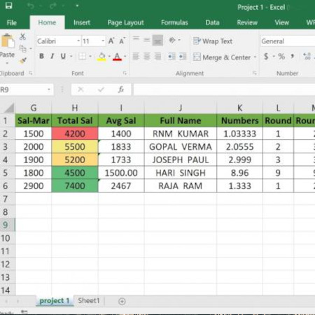

Bagagem e Visão Integrada
Com mais de 25 anos em TI e expertise no AgroPecuária, minha visão multidisciplinar impulsiona a Ciência de Dados para além da análise, focando na aplicação que maximiza o impacto e o crescimento do negócio.
Áreas de Conhecimento
O Cientista de Dados na Prática
Liderar a aplicação estratégica de modelos analíticos no cerne do negócio, traduzindo competências tecnológicas em resultados tangíveis e mensuráveis.
Funções Analíticas
- Implementação de modelos estatísticos e algoritmos de Machine Learning.
- Formulação de hipóteses verificáveis a partir de problemas de negócio.
- Avaliação rigorosa de resultados e quantificação de incertezas.
Funções Tecnológicas
- Manipulação e preparação de grandes datasets (ETL).
- Utilização de frameworks de Big Data (Spark, Hadoop).
- Comunicação efetiva de insights técnicos para stakeholders não-técnicos.
Meus Projetos (Showcase)
Exemplo técnico que documenta minha expertise em MLOps, transformando a complexidade dos dados em automação e resultados mensuráveis.
 Excel para Gráfico (Automação)
Excel para Gráfico (Automação)
Funcionalidade de transformar dados brutos em insights visuais. Link para demonstração do projeto.
Ver Repositório IrrigaSeca (Agro/ML)
IrrigaSeca (Agro/ML)
Modelo preditivo para otimização de irrigação com GeoData. Stack: Geopandas, Scikit-learn.
Ver Repositório Geoprocessamento (Análise Hídrica)Análise geoespacial e índices NDVI para monitoramento de saúde de culturas.
Ver RepositórioHabilidades
Cada item nesta galeria é uma prova visual da minha expertise em MLOps, demonstrando a conversão de Big Data em valor de negócio mensurável.

{kind=link}
Modelos ARIMA/Prophet para prever a demanda futura de um produto e otimizar estoque. Stack: Python, Statsmodels, Prophet.
Ver Repositório  Previsão de Demanda (Séries Temporais){kind=link}
Modelos ARIMA/Prophet para prever a demanda futura de um produto e otimizar estoque. Stack: Python, Statsmodels, Prophet.
Ver Repositório KPIs de Negócio (Dashboard Interativo){kind=link}
Dashboard interativo criado com Streamlit para acompanhamento de métricas críticas em tempo real. Stack: Streamlit, Pandas, SQL.
Ver Repositório Limpeza e Transformação de Dados (ETL){kind=link}
Script de ETL focado em tratamento de dados ausentes e inconsistentes para garantir a qualidade analítica. Stack: Python, SQLAlchemy, Docker.
Ver Repositório{kind=link}
Script de ETL focado em tratamento de dados ausentes e inconsistentes para garantir a qualidade analítica. Stack: Python, SQLAlchemy, Docker.
Ver RepositórioEntre em Contato
Em busca de desafios estratégicos em Data Science e Big Data. Conecte-se para explorar sinergias e discutir projetos de alto impacto.